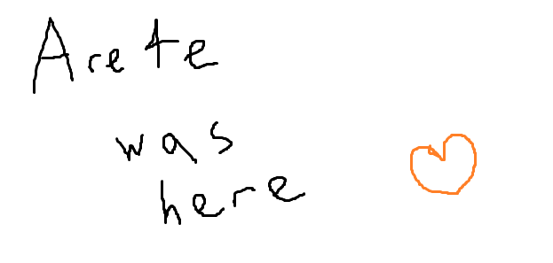

K
Got it

K
Got it
confused noises
kbye
my gut still thinks sulits the best lynch but i’d feel really bad for her if i was wrong
aaaa
I need to wait for answers tbh
If None of them answers in the next 12 hours i will insta lockscum them
*If they don’t answer in the next 12 hours ill lockscum them
Ive been reallyreallyreally busy gardening for the past 4 hours.
I will reply when im home
But
Im not scum
Bam
Still waiting
Cool
Patience is a virtue
Wait why does your title have the same orange box
Noooo rip Chloe
@EVO @Arete @an_gorta_pratai @sulit
One of you is town.
WvWvWvWvT
Do ONE of the following
Do your best to convince me you are town.
Do your best to convince me the others are more wolfy then you.
Do your best to tell me your thought process behind your actions.
uhhh i’ve read like, part of the day before this, when arete was talking about ritual katze or something, i am still reading up so uno momento
i started typing something but then I made a cake
and now I have a really bad headache
so im going to sleep and ill prolly finish it in the morning
Poggers no one has answered yet
I have waited 4 hours
okay
so I’m going to try to walk you through the thought process behind my actions, I guess
so on D1 I was mostly trying to find a strong towncore so that I could solve by PoE + pick good ritual targets + make good decisions about who to target with my actions, since it’s obviously important that I collect pure blood, if it would be helpful I can try to quote specific posts that demonstrate my thought process but they’re also just in my Iso, you can find them for yourself if you want to, so for instance I (?probably? correctly) cleared DryBones based on his meta, and (incorrectly) cleared Kyo. On D1 I collected blood from DryBones because he was almost certainly a villager based on meta + my personal experience with him (I’ve played with him on other sites, I wasn’t just going based off of Alice’s read here) but I was thinking at the time that he was a good ritual because he was both obvious town and kind of useless (meaning that my time window for being able to get his blood would be limited). I wasn’t sure whether to collect blood + no-action or drain blood + drink, I decided to collect blood + no-action because my slot was kind of contentious and I thought that draining three blood + drinking was likely to kill town if I had good reads and someone decided to check me and I thought that draining four blood + drinking was only going to do something if heretics decided to visit me, which I couldn’t count on. I was mostly trying to decide between Apprentice and Appelsini as the lynch targets on D1, I scumread Apprentice because he was much less solvey than in other games I’ve seen him in (I didn’t want to say this at the time because Anime was still ongoing, but he was a lot solvier in Anime where he was town) and his reads were basically just restating consensus statements, and Appel because a lot of her thought process felt fake/forced.
On D2 when we were choosing the ritual target I initially went for Italy because the whole ‘ritual Italy get free peek’ think sounded really good and he seemed ?probably? legitimate, but towards EoD his ‘haha but I could be the Lamb’ jokes were starting to make me nervous that he actually was because that’s the sort of joke that Lamb!Italy would think was really funny to make, I didn’t initially want to CFD to Kyo when we were both in the same four-person thunderdome (instead I wanted Marshal based on his IC claim, which I saw as most likely coming from an actual IC  ) but went along with the Kyo CFD because Italy had made me really nervous and I saw Apprentice as the most likely fake Blood Mage by far (so the thunderdome wasn’t really factoring into my reads).
) but went along with the Kyo CFD because Italy had made me really nervous and I saw Apprentice as the most likely fake Blood Mage by far (so the thunderdome wasn’t really factoring into my reads).
After Kyo flipped I was obviously not super happy about it, I decided the best thing to do was to look through his interactions to try to re-evaluate my reads since clearly I was badly wrong about the gamestate, I do think I managed to legitimately clear some people off of that but I might have miscleared sulit. When Vul subbed in I tried especially hard to read him because in the past I’ve been really good at reading him, it took me a little while but eventually he was able to make some posts that in my experience he would only be able to make as a villager in order to correctly clear him. I used my reads-in-general + associations with Kyo to try to make a PoE for the two starting non-Kyo non-traitor heretics and came up with Apprentice/Marshal/Wispmelia, I saw Apprentice and Marshal as unlikely to be W/W because why would Apprentice thunderdome himself with his wolf partner, and furthermore thought Kyo interactions looked the best for Apprentice. Since I thought the two starting not-traitor heretics were all in the Marshal/App/Wispmelia pool and that Marshal and App weren’t W/W that meant that Wispmelia had to be a starting heretic, so I started pushing her (this was after Amelia subbed in and did a bunch of super wolfy things like talking about how we wouldn’t know if she was starting or converted if she flipped wolf), and her response to my pressure was bad and also Marshal was defending her, when he was one of the other three people in my ‘starting heretic’ pool so I was like ‘HMMMMMMMMMM’ but I decided to push Amelia over Marshal because I was more confident in that read while the Marshal read was more based on associatives. Marshal was also making me nervous at that point because he was doing a lot of the things that he’s specifically talked about doing when he’s trying to pocket me, which IIRC I pointed out at the time. Anyways, we were pretty obviously behind even if Amelia was a hit, so I decided to drain blood from three people, which would give me four stacks of blood total. I didn’t want to take it from only two people (making three in total) because in that case if Amelia was a miss I was likely going to get visited by investigatives/offensives and if she was a hit there was a decent chance I’d be visited by protectives, the first one being especially bad because if too many visited me I could just accidentally send us past parity. I chose katze/Alice/Vul as my three targets, I don’t actually remember why I went with Alice and in hindsight if I could do that again I’d have gone with Italy but at the time I kind of forgot that Italy existed, Vul I was confident was a villager from talking to him and katze was also very villagery, I thought about you (Braixen) but at the time I had you still as a possible convert.
Night 2 I drank blood and hoped really hard that scum would visit me + that the blood was pure, even though at that point it was unlikely that both those things were true. Also I asked N.1 if Elixir of Blood kills could have deathnotes, since the OP said deathnotes could be submitted on a kill, and apparently they could (which is sort of weird because they aren’t targeted attacks but he’s the host not me) so I made a deathnote that said ‘Arete was here’ so I’d know for absolute certain if I’d killed anyone + be able to semi-prove myself. Also overnight I tried to re-evaluate my reads, because for Wispmelia to flip town I had to have miscleared someone. You can see my thought process for that in my logs dump at the start of the day, towards the end when I was running out of time it basically displays my thought process in real time.

Today I really didn’t want us to screw up and ritual scum again, I did ~math~ with everyone else about what each ritual type would mean for us numbers-wise and that’s part of why I wanted to go with a kat ritual, it was making me nervous that Marshal was pushing for it when he was thunderdomed with kat but kat was being super villagery particularly towards EoD and I didn’t really want to try another CFD. That vote was actually almost certainly a good vote, as in a vote on a villager, just obviously it didn’t work out. Also when people were talking about ritualling me I updated my logs just in case I got ritualled. I switched the kill ritual onto Wazza because he was being super wolfy and the vote ritual onto Braixen because if I accidentally gave it to a wolf that would be really bad and I didn’t super trust Braixen’s reads but I trusted his alignment (they had previously been on App and Marshal respectively, both of which were holdovers from D2).
I was doing a Duolingo Polish lesson while I waited for the results of the ritual so it took me a couple minutes to see the result, the first thing I saw was a red rolecard and I was upset with myself for misreading kat except then two seconds later my brain caught up enough to actually read the name and instead it was like ??how?? did Marshal??? get ritualled?? although I figured out that one pretty quickly. Since the Marshal ritual happened I’ve been trying to reevaluate my reads and figure out (a) who I can trust (b) who I can still trust, I want to try to look more at Marshal’s spew to figure out who isn’t W/W with Marshal but it’s hard because I don’t know for sure if he was converted or starting. I do think I’ve managed to clear a few people as not converted but overall this situation kind of sucks.